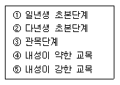
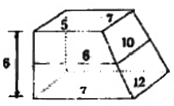
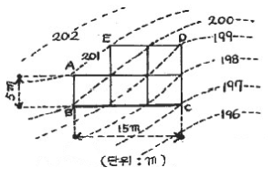
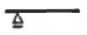
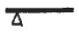
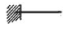
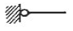

조경기사 (2006-09-10 기출문제)
1과목: 조경사
1. 우로마찌(室町)시대 정원은 대선원의 고산수식정원과 평정고산수식인 용안사의 석정으로 집대성 되었다. 이런 조경 수법의 근본적인 사상은?
- 유교사상
- 도교사상
- 신선사상
- 자연주의 사상
(정답률: 64%)

2. 다음 중 고대문헌의 표현과 현재의 수목명이 가장 바르게 연결된 것은?
- 산다화 - 모란
- 옥단 - 살구
- 행목 - 목련
- 목근화 - 무궁화
(정답률: 60%)
3. 공공건물로 둘러 싸여 있으며, 때때로 수목도 심어졌던 그리스 도시민의 경제생활과 예술활동이 이루어졌던 공공용지는?
- 아크로폴리스(Acropolis)
- 아고라(Agora)
- 알리(Allee)
- 불루바드(Boulevard)
(정답률: 90%)
4. 다음의 주택정원 가운데 연못 수(水)경관이 없는 곳은?
- 구례 운조루
- 괴산 김기응 가옥
- 강릉 선교장
- 달성 박황 가옥
(정답률: 알수없음)
5. 18세기 영국의 스토우 가든은 당대의 유명한 정원가들에 의해 몇 차례 개조가 되었는데 개조에 참여한 정원가의 순서로 옳은 것은?
- 브릿지맨 - 스윗처 - 캔트
- 스윗처 - 브릿지맨 - 캔트
- 캔트 - 브릿지맨 - 브라운
- 브릿지맨 - 캔트 - 브라운
(정답률: 89%)
6. 다음 중 고려시대(A)와 조선시대(B) 정원을 관장하던 곳의 명칭으로 옳은 것은?
- A : 내원서, B : 장원서
- A : 식대부, B : 장원서
- A : 내원서, B : 식대부
- A : 장원서, B : 상림원
(정답률: 55%)
7. 경복궁 교태전 후원인 아미산원에서 볼 수 있는 정경물이 아닌 것은?
- 석등
- 석지
- 6각형 굴뚝
- 괴석
(정답률: 50%)
8. 조선시대 사찰의 공간구성 기본원칙이 아닌 것은?
- 계층적 질서의 추구
- 채와 마당의 분리
- 공간 상호간의 연계성 제고
- 인간척도의 유지
(정답률: 40%)
9. 고대 이집트 주택정원의 조성 내용으로 틀린 것은?
- 정원은 사각형의 공간에 높은 울담을 설치하였다.
- 입구에는 탑문(塔門, Pylon)을 세웠다.
- 정원 요소요소에는 거형 혹은 T자형의 침상지가 배치되고 물가에 키오스크를 설치하였다.
- 점원 곳곳에 녹음수를 군식하였다.
(정답률: 92%)
10. 다음 고대로마의 주택정원에 대한 설명 중 틀린 것은?
- 주택은 열주와 개방된 정원 혹은 아트리움에 의해 연결된 거실을 가지고 있었으며 거리에 연하여 세워졌다.
- 주택의 배치는 축을 이루고 기하학적으로 되어 있으며, 수로에 의해 정원을 4개의 주요 장방형 공간으로 나누고 있다.
- 정원은 태양, 바람, 먼지, 거리의 소음으로부터 은신처였으며, 그늘은 둘러싸여 있는 주랑에 의해 제공되어졌다.
- 수목은 주로 화분이나 화단에 심어졌고, 돌로 된 물웅덩이와 대리석 탁상 그리고 작은 동상들이 마당을 아름답게 꾸미는 정원의 구성요소였다.
(정답률: 55%)
11. 자연경관을 작은 공간에 줄여 다양하고 상징적인 수경을 조경의 형태로 감상하는 수법을 도입한 조경양식은?
- 중국의 조경
- 한국의 조경
- 일본의 조경
- 이탈리아의 조경
(정답률: 93%)
12. 중국의 조경에 있어 시대별로 가장 적합하게 연결된 것은?
- 송 - 만세산
- 청 - 태화궁
- 당 - 태액지
- 진 - 화림원
(정답률: 59%)
13. 일반적으로 조선시대 상류주택의 정원 중 바깥주인의 거처 및 접객공간이며, 주택외부와 가까운 곳에 위치하여 바깥마당, 행랑마당과는 대문, 중문을 통하여 연결되며, 구심력을 내포하는 장소성이 강한 공간은?
- 행랑마당
- 별당마당
- 사랑마당
- 사당마당
(정답률: 50%)
14. 중국 왕희지(王羲之)의 난정고사(蘭亭故事)에 연유해 조성된 조경적인 요소는?
- 곡수거(曲水渠)
- 누정(樓亭)
- 별서정원(別墅庭園)
- 방지원도(方池圓島)
(정답률: 55%)
15. 독일의 풍경식 조경이 19세기에 들어 전 유럽의 풍경식 조경가들의 좌우명이 된 원칙은?
- 합리성과 경제성을 우선으로 한다.
- 식물생태학과 식물지리학을 기초로 자연경관의 복원을 과제로 한다.
- 자연법칙에 입각한 토지의 이용계획을 한다.
- 자연주의에 입각한 토지의 복구와 자연경관의 복구에서 접근한다.
(정답률: 67%)
16. 옴스테드와 보우의 ‘그린스워드’안의 특징으로 틀린 것은?
- 격자형 도시 패턴을 부각하기 위한 도입한 정형화된 녹지
- 교육적 효과를 위한 화단과 수목원
- 동적 놀이를 위한 경기장
- 산책, 대담, 만남 등을 위한 정형적인 몰(mall)과 대로
(정답률: 알수없음)
17. 이집트 사람들이 신성시한 나무로서, 죽은 자를 이 나무 그늘 아래서 쉬게 하는 풍습이 있었다. 이 나무의 이름은?
- 아카시아(Acasia nilotica)
- 파피루스(Cyperus papyrus)
- 무화과(Sycamore fig)
- 대추야자(Date palm)
(정답률: 30%)
18. 다음 정원 중 이탈리아 르네상스시대에 이탈리아와 유럽을 잇는 역할을 한 살로옹 드 코스가 설계한 정원은?
- 가르조니 빌라
- 에스테 빌라
- 보블리 정원
- 팔라티누스 정원
(정답률: 7%)
19. 피렌체 메디치장(Villa Medici)에 관한 다음 설명 중 옳은 것은?
- 1450년경 코지모 디 메디치(Cosimo de, Medici)가 조경가 알베르티(Alberti)의 설계에 따라 만들었다.
- 낭쪽 사면의 비탈면을 깎아 3개의 단(terrace)를 만들었다.
- 첫째 단에는 빠르테르(parterre)를 만들고, 윗단에는 카지노(casino)를 두었다.
- 첫째 단의 정원은 중앙에 축을 두고 조경요소를 대칭적으로 배치하고 있다.
(정답률: 30%)
20. 라이트와 스타인은 호와드의 사상과 이념을 전승한 어윈에서부터 옴스테드 ㆍ 번함으로 이어진 전원도시의 건설에 대한 영향을 받아 건설된 미국적인 전원도시는?
- 레치워쓰(Letchworth)
- 레드번(Radburn)
- 웰윈(Welwyn)
- 매리랜드(Maryland)
(정답률: 73%)
2과목: 조경계획
21. 매슬로우(Maslow)가 말한 인간욕구의 위계 중 가장 높은 단계의 욕구는?
- 소속(감), 사랑
- 안전
- 자아실현(자기구현)
- 존경
(정답률: 62%)
22. 다음 중 지형적인 차이를 평면에 가장 상세하게 기록하기 위해 적합한 방법은?
- 사선법
- 단면도법
- 정고법
- 단채법
(정답률: 44%)
23. 우리나라 주택정원 계획에 관한 설명으로 틀린 것은?
- 주택정원은 중정지역을 선정하여 정원의 주체와 주요 위치를 찾아 통일성을 기한다.
- 전정광장은 공적인 공간으로부터 사적인 내부 공간사이의 전이적 공간의 역할을 한다.
- 주택정원의 기능분할은 전정, 주정, 후정, 작업정등으로 구성되어 있다.
- 주택정원의 전정은 프라이버시를 위해 복잡하고 비밀스럽게 꾸며주는 것이 좋다.
(정답률: 알수없음)
24. 다음 중 Kevin Lynch가 언급한 도시의 이미지 구성요소에 해당되지 않는 것은?
- edges
- landmarks
- points
- nodes
(정답률: 63%)
25. 다음 중 자전거이용시설의 구조 및 시설기준에 관한 사항 중 틀린 것은?
- 자전거도로의 곡선반경은 30km/hr이상인 경우 18m이상으로 하여야 한다.
- 자전거도로의 설계속도가 20km/hr이상인 경우 정지시거는 15m이상으로 확보되어야 한다.
- 자전거도로의 폭은 1.1m이상으로 한다. 다만 100m미만의 터널 ㆍ 교량등의 경우에는 0.9m이상으로 할 수 있다.
- 자전거도로의 종단구배가 7%이상일 때 제한 길이는 90m 이하로 설치한다.
(정답률: 39%)
26. ‘어의구별척도(semantic differential scale)'에 관한 설명 중 틀린 것은?
- 환경 ㆍ 인간 ㆍ 장소 등에 관한 의미를 조사하는데 쓰인다.
- 하나의 형용사를 제시하고 이에 부합되는 정도를 선택하도록 한다.
- 조사목적에 맞는 적절한 형용사 목록을 마려하는 것이 중요하다.
- 제시된 사물이 응답자 자신에게 어떻게 느껴지는가를 조사하는 방법이다.
(정답률: 40%)
27. 우리나라 자연공원의 지정기준에 해당되지 않는 내용은?
- 자연경관 보존
- 이용추세 보존
- 지형 보존
- 문화경관 보존
(정답률: 82%)
28. 녹지자연도(DGN:degree of green naturality)작성의 목적으로 보기 어려운 것은?
- 녹지공간의 자연성 지표 설정
- 개발 혹은 보존여부의 검토를 위한 기초자료의 제공
- 산림경관의 시각적 유형분류
- 인간영향(human impact) 정도의 파악
(정답률: 42%)
29. 일반적으로 이용자와 레크레이션 자원간의 거리는 레크레이션 패턴을 변화시킨다. 관광여행(2박3일 이상)의 형태는 여행시간이 얼마인 경우에 가장 적합한가?
- 1 ~ 2시간
- 2 ~ 3시간
- 3 ~ 4시간
- 4시간 이상
(정답률: 31%)
30. 래드번(Radburn) 계획의 기본원리에 관한 설명으로 틀린 것은?
- 기능에 따른 2가지 종류의 도(道)로 구분한다.
- 보도망의 형성 및 보도와 차도(고가차도)의 입체적 분리한다.
- 주거구는 슈퍼블록으로 하고 통과 교통을 금한다.
- 주택단지 어디로나 통할 수 있는 공동의 오픈 스페이스를 조성한다.
(정답률: 알수없음)
31. Gold(1980)가 제시한 레크레이션 계획의 접근방법 중 형태형(behavioral approach)접근방법을 가장 잘설명한 것은?
- 물리적 자원이 레크레이션의 유형과 양을 결정하는 방법이다.
- 공급이 수요를 만들어 낸다는데 기초한 방법이다.
- 일반대중이 여가시간에 언제 어디서 무엇을 하는가를 파악하여 그들의 구체적인 행동 패턴에 맞추어 계획하는 방법이다.
- 어느 지역 사회의 경제적 기반이나 예산 규모가 레크레이션의 총량, 유형, 입지를 결정하는 방법이다.
(정답률: 71%)
32. 3계절형이며 방문객수가 100,000명인 관광지에서의 조사결과 연평균 체류시간이 2시간으로 밝혀졌다. 이 관광지의 동시수용력은? (단, 최대일률은 1/60, 회전율은 1/2.5, 서비스율은 0.6으로 한다.)
- 882명
- 588명
- 600명
- 400명
(정답률: 28%)
33. 다음 중 환경ㆍ교통ㆍ재해 등에 관한 영향 평가법상에서 평가분야별 중앙행정기관의 연결이 잘못된 것은?
- 인구영향평가분야 - 통계청
- 환경영향평가분야 - 환경부
- 교통영향평가분야 - 건설교통부
- 재해영향평가분야 - 소방방재청
(정답률: 34%)
34. 미기후(Microclimate)에 대한 설명 중 틀린 것은?
- 미기후 요소는 대기요소와 동일하며 서리, 안개, 자외선 등의 양은 제외한다.
- 건축물은 미기후에 영향을 미친다.
- 지형, 수륙의 분포, 식생의 유무와 종류는 미기후의 변화 요소이다.
- 현지에서 장기간 거주한 주민과 대화를 통해서도 파악 할 수 있다.
(정답률: 63%)
35. 자연공원법상의 공원계획에 대한 설명 중 맞는 것은?
- 환경부장관은 5년마다 국립공원위원회의 심의를 거쳐 공원기본계획을 수립하여야 한다.
- 자연환경지구에는 임도의 설치가 가능하다.
- 공원자연보존기구는 자연환경지구의 완충공간의 역할을 한다.
- 공원자연환경지구는 생물다양성이 특히 풍부한 곳 과 자연생태계가 원시성을 지니고 있는 곳에 지정한다.
(정답률: 10%)
36. 자연휴양림 계획대상지내 잠재자원을 파악하기 위한 분석 내용 중 거시(macro)분석 내용이 아닌 것은?
- 광역적 위치 검토
- 도입활동 조사
- 환경 취급 방침의 검토
- 개발테마의 결정
(정답률: 알수없음)
37. 경관의 시각적 흡수성에 대한 설명 중 틀린 것은?
- 경관의 시각적 흡수성은 시각적 투과성과 시각적 복잡성의 함수로 나타낼 수 있다.
- 경관의 시각적 투과성은 식생이 밀집정도 및 지형적 위요 정도에 따라 결정된다.
- 경관의 시각적 복잡성은 상호 구별될 수 있는 시각적 요소의 수에 따라 결정된다.
- 일반적으로 경관의 시각적 투과성이 높으면 시각적 흡수성도 높다.
(정답률: 64%)
38. 리모트 센싱(Remote sensing)에 의한 환경분석방식 중 항공사진 판독으로 파악하기 힘든 내용은?
- 도시녹지의 질과 양의 파악
- 시간적 추이에 따른 환경의 변화 파악
- 원지반(原地盤)의 기복(起伏)상태
- 수종 명칭 및 식생 군락 형태
(정답률: 알수없음)
39. 쿨데삭(cul-de-sac)형태의 도로 패턴이 가장 효과적으로 이용될 수 있는 장소는?
- 주거단지
- 공업단지
- 관광단지
- 도심지
(정답률: 75%)
40. 국토의 계획 및 이용에 관한 법률에서 용도지역 중 도시 지역의 분류에 속하지 않는 것은?
- 주거지역
- 생산관리지역
- 상업지역
- 녹지지역
(정답률: 67%)
3과목: 조경설계
41. 단면 상세도를 그리는데 알아야 할 사항과 관계가 먼 것은?
- 각 부분의 관계높이
- 재료의 성질
- 재료의 치수
- 마무리 방법
(정답률: 알수없음)
42. 다음 중 재해, 상해를 일으키는 위험성이 있는 것의 표시 또는 그 장소에 사용하는 안전 색채는? (단, KS 규격의 내용을 따른다.)
- 적색
- 황적색
- 청색
- 녹색
(정답률: 50%)
43. 환경설계평가(Environmental design evaluation)의 목표 설명으로 틀린 것은?
- 인간과 환경의 관계성을 연구함으로써 인간행태에 관한 이해를 증진시킨다.
- 새로운 환경의 창조보다는 기존의 환경개선을 목표로 한다.
- 장래의 설계 교육에 필요한 중요한 자료를 마련한다.
- 이용자의 만족도 및 환경의 적합성 예측을 위한 능력개발을 시도한다.
(정답률: 알수없음)
44. 렐프(Relph)는 장소성을 설명하는 개념으로 내부성과 외부성을 거론한 바 있다. 다음 중 내부성과 관련하여 렐프가 제시한 유형이 아닌 것은?
- 존재적 내부성
- 감정적 내부성
- 행동적 내부성
- 직접적 내부성
(정답률: 40%)
45. 계단 설계에 관한 설명 중 틀린 것은?
- 축상의 높이를 h, 단면의 너비를 s라고 할 때, 2h+ s = 40 ~ 55㎝ 의 공식을 보통 활용한다.
- 단의 높이는 18㎝ 이하, 단 너비는 26㎝ 이상으로 설계한다.
- 높이 1m를 초과하는 계단으로서 계단 양측에 벽, 기타 이와 유사한 것이 없는 경우에는 난간을 둔다.
- 높이 2m를 넘는 계단에는 2m 이내 마다 당해 계단의 유효폭 이상의 폭으로 너비 120㎝ 이상인 참을 둔다.
(정답률: 53%)
46. 조경공간의 점경물을 강조하거나 극적인 분위기를 연출할 수 있는 가장 적합한 조명방식은?
- 상향조명(up lighting)
- 하향조명(down lighting)
- 산포조명(moon lighting)
- 실루엣 조명(silhouette lighting)
(정답률: 48%)
47. 경관의 우세원칙과 거리가 먼 것은?
- 대조(contrast)
- 축(axis)
- 시간(time)
- 집중(convergence)
(정답률: 73%)
48. 경관의 시각적 선호를 결정짓는 변수가 아닌 것은?
- 생태적 변수
- 물리적 변수
- 개인적 변수
- 추상적 변수
(정답률: 52%)
49. 폭 15m인 차도에 가로등을 설치하는데 있어, 엇대향 배치로 하여, 도로면 평면조도를 20룩스 확보하고자 할 경우 가로등의 설치간격으로 가장 적합한 거리는? (단, 가로등 1개의 총 광속은 30,000루멘이며, 엇대향 배치계수는 1. 이용률은 50%, 조명률은 1, 보수율은 0.5를 적용한다.)
- 12.5m
- 25m
- 40m
- 60m
(정답률: 50%)
50. 연색성은 좋지 못하나 열효율이 대단히 높고 물상분해능력이 우수하며, 안개속에서 투시성이 좋아 산악도로, 터널 등에 적합한 것은?
- 형광등
- 고압수은등
- 저압나트륨등
- 백열등
(정답률: 48%)
51. 투시도 작성에 대한 설명으로 옳지 않은 것은?
- 효과적인 투시도 작성에 일반적으로 쓰이는 각도는 30˚ ~ 60˚ 이다.
- 투시도의 대상물과 시정이 가까울수록 경사지고 날카롭게 보인다.
- 수평선을 높이면 조감도 형태로 나타난다.
- 화면과 수평선과의 거리는 건물의 크기와 관계가 깊다.
(정답률: 10%)
52. 조경설계기준에 의한 조경포장 설명 중 옳은 것은?
- 보도용 포장이란 보도, 자전거도, 자전거보행자도, 공원 내 도로 및 광장 등 주로 보행자에게 제공되는 도로 및 광장의 포장을 말한다.
- 차도용 포장이란 차량의 최대 적재량에는 제한 없이 관리용 차량이나 모든 일반차량의 통행에 사용되는 도로의 포장을 말한다.
- 간이포장이란 주로 차량의 통행을 위한 아스팔트콘크리트 포장과 콘크리트 포장을 말한다.
- 조경시설에서 강성포장(rigid pavement)은 적용되지 않는다.
(정답률: 알수없음)
53. 공원·유원지·주택단지 등 설계대상 공간의 놀이시설 중 2연식 시소의 표준 규격은?
- 길이 2.2m × 폭 1.2m
- 길이 2.8m × 폭 1.4m
- 길이 3.2m × 폭 1.6m
- 길이 3.6m × 폭 1.8m
(정답률: 알수없음)
54. 공공을 위한 단지를 조성할 때 동선계획에 관한 설명 중 틀린 것은?
- 동선은 가급적 단순하고 명쾌해야 한다.
- 상이한 성격의 동선은 가급적 분리시켜야 한다.
- 이용도가 높은 동선은 가급적 길게 해야 한다.
- 옥외에 설치하는 계단의 단수는 최소 2단 이상 설계한다.
(정답률: 65%)
55. 다음 중 녹색과 색상차가 가장 크며 대조적인 색은?
- 자주색
- 주황색
- 보라색
- 빨강색
(정답률: 40%)
56. 다음 중 스카이라인의 물리적 형태가 아닌 것은?
- 중첩된 형태
- 프레임된 형태
- 구상적 형태
- 엑센트가 있는 형태
(정답률: 알수없음)
57. 일반적으로 치수 기입에 대한 설명으로 옳은 것은?
- 치수의 단위는 ㎝를 원칙으로 한다.
- 치수보조선은 치수선과 직교하는 것이 원칙이다.
- 일반적인 방법으로 수치 치수를 기입하기에는 치수 선이 너무 짧을 경우, 수치를 세로로 기입할 수 있다.
- 치수선은 주로 조감도, 시설물상세도, 투시도 등 다양한 도면에 사용된다.
(정답률: 알수없음)
58. 옥상정원 설계시 가장 우선적으로 고려 되어야 할사항은?
- 토양의 깊이
- 배수구조물의 위치
- 관수 시설
- 건축구조의 하중 분포
(정답률: 80%)
59. 환경 지각 이론 중 생태적 이론을 주장한 심리학자는?
- Koffka
- Lewin
- Gibson
- Brunswik
(정답률: 46%)
60. 일반적으로 40대의 승용차가 주차할 수 있는 주차장의 단위주차 구획면적의 합계로 옳은 것은? (단, 지체장애인 전용주차장, 평행주차형식, 경형자동차 전용주차구획은 제외, 주차장법 규정을 적용한다.)
- 420 m2 정도
- 460 m2 정도
- 500 m2 정도
- 600 m2 정도
(정답률: 알수없음)
4과목: 조경식재
61. 고속도로 사고방지 기능의 식재방버에 속하지 않는 것은?
- 명암순응식재
- 차광식재
- 지표식재
- 완충식재
(정답률: 91%)
62. 다음 중 큰 나무라도 비교적 이식이 쉬운 편에 속하는 수종은?
- Larix leptolepis
- Betula platyphylla
- juglans sinensis
- Ginkgo biloba
(정답률: 55%)
63. 잔디의 생육 최소 싱토 깊이는?
- 15cm
- 30cm
- 45cm
- 60cm
(정답률: 43%)
64. 다음 중 엽면적 지수(LAI)를 바르게 나타낸 것은?
- 지상의 엽면적 합계 / 지표면적
- 지상의 엽면적 합계 / (지표면적)
- (지상의 엽면적 합계) / 지표면적
- 지표면적 / 지상의 엽면적 합계
(정답률: 43%)
65. 다음 중 식생에 관한 설명으로 틀린 것은?
- 식물의 집단을 식생(植生)이라 하고 그 식생의 구성 단위를 식물군락이라 한다.
- 식물 군락을 성립시키는 내적 요인으로는 기후 요인, 토양 요인, 생물적 요인 등을 들 수 있다.
- 어떤 일정한 땅에 있어서 식물 군락의 시간적 변이 과정을 천이라 한다.
- 개체 사이의 경합은 있으나 생존상의 요구 조건이 어느 정도 일치하는 식물 간에 일어 나는 현상을 공존이라 한다.
(정답률: 34%)
66. 단풍나무 중 복엽이면서 가장 노란색 단풍이 들고, 낙엽이 진 후의 녹색의 가지가 아름다워 경관수 및 녹음수로 이용되는 수종은?
- Acer mandshuricum MAX.
- Acer negundo L.
- Acer palmatum THUMB.
- Acer mono MAX.
(정답률: 48%)
67. 식재성과의 효과적 구현을 위한 고려사항으로 가장 거리가 먼 것은?
- 이용자의 요구조건과 입지조건에 합당한 우량소재선정
- 식재지 토성의 적절한 준비
- 공기에 맞추어 신속한 식재 실시
- 정기적인 사후관리 철저
(정답률: 47%)
68. 일반적인 도시조경에 있어 광장의 식재기준에 대한 설명으로 틀린 것은?
- 시장광장, 집회광장의 경우 식재는 광장 외주부에 녹음수를 두는 정도로 하되, 특히 피난광장의 경우는 방화수림대를 겸할 수 있게 한다.
- 일반적으로 광장의 수목식재는 산울타리(hedge)로서 벽체를 구성하거나, 총림으로서 매스효과와 비스타(vista)를 구성하는 정형적인 것이 바람직하다.
- 식재수종은 수형이 단정하고, 대기오염 및 병충해, 건조에 강하고, 꽃 피는 기간이 오래가는 것이 좋다.
- 기념광장이나 장식광장은 다양한 교목식재를 통한 녹음공간의 제공이 중요하다.
(정답률: 알수없음)
69. 수목의 식재토양은 배수성과 통기성이 좋은 단립(團粒)구조가 이상적이다. 다음 중 토질의 이상적인 구성비는?
- 토양입자 30%, 수분 30%, 공기 40%
- 토양입자 40%, 수분 30%, 공기 30%
- 토양입자 50%, 수분 20%, 공기 30%
- 토양입자 50%, 수분 25%, 공기 25%
(정답률: 48%)
70. 다음 중 아황산가스에 약한 수종들로 짝지어진 것은?
- Pinus densiflora, Zelkova serrata
- Juniperus chinensis, Ligustrum japonicum
- Cycas revoluta, Yucca recurvitolia
- Hibiscus syriacus, Albizzia julibrissin
(정답률: 25%)
71. 다음 중 수목의 식재 중 다섯 그루 식재시 바라보는 방향에서 점진적으로 시점(視點)을 유인하면서도 전체적으로 균형을 이룬 형상을 유지하려 할 때 가장 적합한 방법은?
- 한 그루 심기 - 네 그루 심기의 짝 지움
- 두 그루 심기 - 세 그루 심기의 짝 지움
- 세 그루 심기 - 두 그루 심기의 짝 지움
- 네 그루 심기 - 한그루 심기의 짝 지움
(정답률: 58%)
72. Allee 성장형으로 본 식물종의 성장률 설명으로 옳은 것은?
- 중간밀도에서 다른 경우 보다 더 크다.
- 낮은 밀도에서 다른 경우 보다 더 크다.
- 높은 밀도에서 다른 경우 보다 더 크다.
- 항상 동등하게 성장한다.
(정답률: 알수없음)
73. 다음 중 수목식재시 이용되는 지주재의 설명으로 옳은 것은?
- 담김줄은 12게이지의 담금질한 아연도금강선으로 하며, 담김줄 중간에 부착하는 턴버클은 KS 규정에 적합한 것으로 한다.
- 지주재는 통나무나 각재 또는 대나무 등을 사용하며, 특별히 고안된 지주를 사용할 수 없다.
- 식재시 죽은 나무를 이용하며 지주용 통나무는 마구리의 가공은 필요 없으며, 절단면과 측면만을 다듬어 사용한다.
- 지주목 대나무는 2년생 이하로, 강도가 뛰어나고 썩거나 벌레 먹음, 갈라짐 등이 없어야 한다.
(정답률: 30%)
74. 식재설계에 있어서 중요한 토양조건의 설명으로틀린 것은?
- 좋은 토양구조와 토성을 지닌 혼합물
- 느슨하지 않고 쉽게 부스러지지 않는 토양
- 유기질과 양분함량이 높고, 물을 저류하거나 배수가 용이한 토양
- 산소함량이 지속적으로 높음과 동시에 식물생육에 적합한 pH를 지닌 토양
(정답률: 64%)
75. 캔터키 블루 그라스가 가장 잘 자라는 적정 pH는?
- 약 pH 3.5 ~ 4.8
- 약 pH 4.2 ~ 5.0
- 약 pH 5.2 ~ 5.8
- 약 pH 6.0 ~ 7.8
(정답률: 46%)
76. 옥상, 인공지반 등의 녹화공사시 방수공사의 유의 사항으로 틀린 것은?
- 방수재는 내용연수가 긴 아스팔트 보호방수가 일반적이다.
- 수밀성을 필요로 하는 연못 등에는 스테인레스 시트방수 등으로 이중방수 한다.
- 배수경사는 1/20 이상으로 하는 것이 바람직하다.
- 방수층의 끝부분(오름)은 식재 상면에서 적어도 150mm로 한다.
(정답률: 28%)
77. 천이가 진행되는 장소의 식물상 교체 모델 순서가 맞게 된 것은?

- ①→②→③→④→⑤
- ③→①→②→⑤→④
- ②→①→③→⑤→④
- ⑤→④→③→②→①
(정답률: 92%)
78. 건조한 땅에 견디는 수종들로 바르게 짝지어진 것은?
- 낙우송, 계수나무, 오리나무, 층층나무
- 소나무, 향나무, 가중나무, 싸리나무
- 병꽃나무, 비자나무, 서어나무, 능수버들
- 신갈나무, 느티나무, 팽나무, 하말라야시다
(정답률: 알수없음)
79. 다음 중 개오동나무의 과명으로 적합한 것은?
- 능소화과
- 장미과
- 물푸레나무과
- 버드나무과
(정답률: 15%)
80. 강음수(强陰樹)에 속하지 않는 수종은?
- Betula platyphylla
- Daphniphyllum macropodum
- Taxus cuspidata
- Aucuba japonica
(정답률: 알수없음)
5과목: 조경시공구조학
81. 조경 시공도 작성에 관한 설명으로 틀린 것은?
- 전체 내용에서 부분내용으로 그려 나간다.
- 기본배치도에서 부분 상세도 작도를 진행한다.
- 단면 상세와 입면도를 가급적 같은 도면에 표시한다.
- 내용상 동일 도면내에서 상세한 정도를 다양하게 한다.
(정답률: 16%)
82. 수질오염의 물리적인 처리방법의 순서로 가장 적합하게 나열된 것은?
- 스크린 - 침전 - 침사지 - 부상 - 여과 - 흡착
- 스크린 - 침사지 - 침전 - 부상 - 여과 - 흡착
- 스크린 - 부상 - 침전 - 침사지 - 여과 - 흡착
- 흡착 - 침사지 - 침전 - 부상 - 여과 - 스크린
(정답률: 31%)
83. 축적 1/50,000의 도상면적을 구적하였더니 40.52cm2 이었다. 이 토지의 실제 면적은?
- 101.3 ha
- 202.6 ha
- 1.013 ha
- 2.026 ha
(정답률: 알수없음)
84. 다음 그림을 각주공식에 의해 토적을 계산하면 얼마인가? (단, 그림상의 숫자 단위는 m 이다.)

- 320m3
- 329m3
- 340m3
- 359m3
(정답률: 62%)
85. 다음 수목 중 굴취시 흉고직경 기준에 의하여 풍셈을 산정하는 수종은?
- 모과나무
- 온단풍나무
- 대추나무
- 산수유
(정답률: 알수없음)
86. 다음 살수기 중 살수할 때 긴 잔디에 의하여 방해되는 것을 막을 수 있고, 관수가 끝나면 지표면과 같은 높이를 유지하므로 잔디 깍기를 용이하게 할 수 있는 장점을 가진 것은?
- 분무 살수기(Spray head)
- 분무입상 살수기(Pop-up spray head)
- 회전 살수기(Rotary head)
- 특수 살수기(Specialty head)
(정답률: 82%)
87. 지하실의 시공기준면을 195m로 절토 한다면 절토량은? (단, 분할된 사각형은 정사각형이며, 한변의 길이는 5m이다.)

- 357m3
- 525m3
- 985m3
- 1,575m3
(정답률: 알수없음)
88. 목재접착에 이용되는 접착제로서 내수, 내구성적인 측면에서 품질이 가장 우수한 것은?
- 아교
- 비닐계수지
- 페놀계수지
- 요소계수지
(정답률: 70%)
89. 다음 중 좌굴(挫屈:buckling)현상의 설명으로 가장 옳은 것은?
- 나무가 바람에 못 견뎌서 넘어지는 현상
- 나무 난간이 몸무게에 못 견뎌서 부러지는 현상
- 땅이 얼었다가 녹을 때 포장이 깨어지는 현상
- 긴 기둥이 무게에 못 견뎌서 휘어져 부러지는 현상
(정답률: 69%)
90. 자동차가 회전할 때 원심력에 저항할 수 있도록 편경사를 주어야 하는데 횡마찰계수가 0.15, 설계속도가 50 km/hr, 곡선반경이 50 m 일 때 편경사는?
- 0.⑤
- 0.10
- 0.14
- 0.24
(정답률: 12%)
91. 목제 5m3는 약 몇 사이(才)인가?
- 약 500 사이(재)
- 약 1,000 사이(재)
- 약 1,500 사이(재)
- 약 2,000 사이(재)
(정답률: 54%)
92. 다음 지점(Supporting joint)에 발생할 수 있는 모든 반력(Reaction)을 나열한 것으로 옳은 것은?

수직 반력, 수평 반력
수직 반력, 수평 반력
수직 반력, 모멘트 반력
회전 모멘트 반력, 수평 반력
(정답률: 47%)
93. 토지이용상 도심부 상업지구에 대한 배수계획시 적정하게 사용될 수 있는 유출계수는?
- 0.1 ~ 0.25
- 0.2 ~ 0.35
- 0.4 ~ 0.55
- 0.7 ~ 0.95
(정답률: 39%)
94. 방위각 230°를 방위로 나타낸 것으로 맞는 것은?
- S50W
- W40S
- S50E
- E40W
(정답률: 60%)
95. 일반적으로 표준품셈에서 정하는 공구손료의 계상 방법은? (단, 노임할증과 작업시간 증가에 의하지 않은 품할증은 제외한다.)
- 직접재료비의 5% 계상
- 직접노무비의 5% 계상
- 직접재료비의 3% 계상
- 직접노무비의 3% 계상
(정답률: 10%)
96. 다음 중 굳지 않은 콘크리트의 성질이 아닌 것은?
- 블리딩(bleeding)
- 성형성(plasticity)
- 반죽질기(consistency)
- 워커빌리티(workability)
(정답률: 42%)
97. 다음 설명 중에서 구조물의 3가지 평형조건식에 해당되지 않는 것은?
- 수평력의 합은 영(零)이다.
- 수직력의 합은 영(零)이다.
- 전단력의 합은 영(零)이다.
- 임의 지점의 모멘트의 합은 영(零)이다.
(정답률: 알수없음)
98. 벽돌벽의 구조상 벽체, 바닥, 지붕 등의 하중을 받아 기초에 전달하는 벽은?
- 내력벽(耐力壁)
- 장막벽(帳幕壁)
- 중공벽(中空壁)
- 비내력벽(非耐力壁)
(정답률: 59%)
99. 도로설계시 종단곡선의 설명 중 틀린 것은?
- 종단곡선은 짧을수록 좋다.
- 노면의 배수를 고려하여 최소종단구배를 0.3 ~ 0.5% 주도록 한다.
- 설계속도가 커지면 종단곡선의 최소길이도 증가한다.
- 교량이 있는 곳 전방에는 종단구배를 주지 않는다.
(정답률: 알수없음)
100. 다음 중 토적계산시 가장 정확한 체적을 얻을 수 있는 계산 공식은?
- 양단면평균법
- 중앙단면법
- 각주공식에 의한 방법
- 삼각법
(정답률: 70%)
6과목: 조경관리론
101. 토양에 시용 후 분해되어 식물에 의하여 흡수된 뒤에 나타나는 생리적 반응 중 산성비료의 성질을 나타내는 것은?
- 용성인비
- 황산암모늄
- 요소
- 칠레초석
(정답률: 알수없음)
102. 다음 중 해충방제 방법 중 기계적 방법이 아닌 것은?
- 유살법(誘殺法)
- 소설법(燒殺法)
- 접촉 침투(接觸 浸透)
- 박피소각(剝皮燒却)
(정답률: 알수없음)
103. 조경 수목에 관수(灌水)할 때 적합한 방법은?
- 표토(表土)가 젖도록 준다.
- 매일 관수한다.
- 물이 충분히 고이도록 준다.
- 토양에 물이 충분히 젖도록 준다.
(정답률: 알수없음)
104. 다음 중 곰팡이에 의해 발생하지 않는 병은?
- 삼나무붉은마름병
- 소나무줄기녹병
- 대추나무빗자루병
- 잣나무잎떨림병
(정답률: 42%)
1⑤. 조경공사의 관리방식 중 도급공사의 단점은?
- 인건비가 필요 이상으로 들게 된다.
- 책임의 소재나 권한의 범위가 불명확하게 된다.
- 임기응변적 조처가 가능해진다.
- 인사정체가 되기 쉽다.
(정답률: 71%)
106. 다음 중 내건성 및 내한성이 가장 강하고, 손상을 받은 후 회복속도가 느린 특징을 보이는 잔디는?
- 조시아그래스
- 켄터키블루그래스
- 벤트그래스
- 버뮤다그래스
(정답률: 28%)
107. 경관조명에서 광원의 종류와 특성 설명이 틀린것은?
- 백열등 : 부드러운 분위기 연출이 가능하며, 수명이 짧고 효율이 낮다.
- 수은등 : 저위도이고 배광제어가 용이하며, 도로조명 및 투광조명에 부적합하다.
- 할로겐등 : 광장의 투광조명에 적합하다.
- 메탈할라이드등 : 고휘도이며, 연색성이 뛰어나고 옥외 조명에 적합하다.
(정답률: 40%)
108. 옥외레크레이션 관리체계의 3가지 기본요소에 해당되지 않는 것은?
- service
- visitor
- resource
- management
(정답률: 알수없음)
109. 다음 네트워크공정 작성에 관한 설명 중 틀린 것은?
- 작업의 선행, 병행, 후속작업에 대한 예상이 가능하다.
- 화살표의 길이는 작업 소요시간과 관계없이 방향만 표시한다.
- 더미(dummy)는 소요시간이 필요한 작업이다.
- 이벤트(event)는 결합점을 나타내며, 작업의 구분점이다.
(정답률: 40%)
110. 다음 중 솔나방에 관한 설명으로 틀린 것은?
- 1년에 1회 발생한다.
- 주로 소나무, 해송, 리기다소나무 등을 가해한다.
- 11월 초 기온이 10℃ 이하로 내려가면 나무줄기를 따라 내려와 지표부근의 나무껍질사이, 돌, 낙엽 밑에서 월동한다.
- 6 ~ 7월 사이 지오판수화제를 살포하여 방제한다.
(정답률: 40%)
111. 블록포장의 좁은 작업공간의 부분 보수를 위한 다짐용 기계로 가장 적합한 것은?
- 램머(rammer)
- 머캐덤 로울러
- 탬덤 로울러
- 불도우저(bulldozer)
(정답률: 67%)
112. 다음 펜폴드(Penfold)가 주장한 레크리에이션 수용능력의 분류방법에 속하지 않는 것은?
- 물리적 수용능력
- 생태적 수용능력
- 심리적 수용능력
- 사회적 수용능력
(정답률: 60%)
113. 식생공에 의한 비탈면 유지관리작업의 내용 중 틀린 것은?
- 년 1회 이상 시비 및 추비를 한다.
- 잡초제거 및 풀베기 작업을 실시하고 초장을 5cm 이하로 깍아준다.
- 관수 및 병충해 방제를 위해 수시로 예찰을 실시하고 방제한다.
- 비탈면 식생은 하단부보다 비탈면 어깨부분의 상태가 나쁘므로 상단부의 관리에 중점을 두고 관리한다.
(정답률: 알수없음)
114. 다음 약제 중 살충제가 아닌 것은?
- 메타유제(메타시스톡스)
- 디코플유제(컬센)
- 만코지수화제(다이센엥-45)
- 지오브릭스분제(마릭스)
(정답률: 19%)
115. 다음 중 관리하자에 의한 사고로 가장 적합한 것은?
- 그네에서 뛰어내리다 벤치에 충돌하는 사고
- 간판이 떨어지거나, 맨홀 뚜껑이 제대로 닫혀있지 않아 발생하는 사고
- 어린이가 안전난간을 넘어가서 연못에 빠지는 사고
- 시설물의 접속부에 손이 끼어서 다치는 사고
(정답률: 88%)
116. 맨홀의 설치간격은 관거의 내경에 따라서 최대간격에 차이가 있는데 다음 연결이 틀린 것은?
- 관거내경 20cm - 최대간격 50cm
- 관거내경 50cm - 최대간격 75cm
- 관거내경 140cm - 최대간격 160cm
- 관거내경 165cm - 최대간격 200cm
(정답률: 18%)
117. 다음 중 일반적인 시설물의 보수 계획시 싸이클이 가장 긴 것은?
- 목재안내판 - 안내글씨 교체
- 목재 파고라(perhola) - 서까래 보수
- 모래자갈포장 - 노면수정
- 정글짐 - 도장
(정답률: 16%)
118. 관광지의 과잉이용을 방지하기 위한 직접적인 이용자 관리기법에 해당되지 않는 것은?
- 구역제 실시
- 이용강도의 배분
- 활동의 제한
- 가격 차등화
(정답률: 67%)
119. 다음 중 페인트에 대한 설명으로 틀린 것은?
- 안료를 적은 양의 물로 용해하여, 수용성 교착제와 혼합한 분말상태의 도료를 수성페인트라 한다.
- 합성수지 에멀젼 페인트는 5℃ 이하의 온도에서 도장시 균열 및 도막형성이 되지 않는다.
- 수성페인트는 취급이 간단하고 건조가 빠르며, 내알칼리성 및 내수성도 좋으나 광택은 없다.
- 수성페인트는 벽면 건조가 균일하여 얼룩이 발생하지 않으므로 칠은 보통 1회 솔칠한다.
(정답률: 30%)
120. 시멘트 창고의 관리 설명 중 틀린 것은?
- 창고의 창은 환기창과 채광창을 설치해야 한다.
- 창고의 반입구와 반출구를 따로 두고 내부 통로를 고려하여 넓이를 정한다.
- 시멘트 반입한 순서대로 사용한다.
- 시멘트를 쌓을 때 바닥으로부터 일정한 높이를 띄워서 쌓는다.
(정답률: 16%)